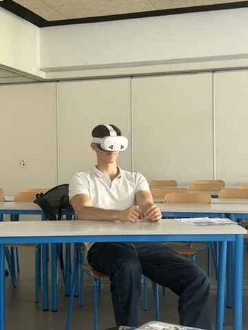
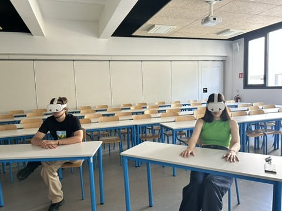
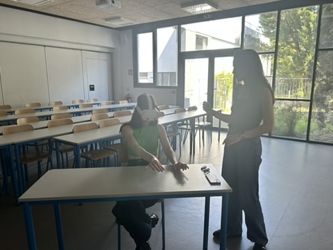
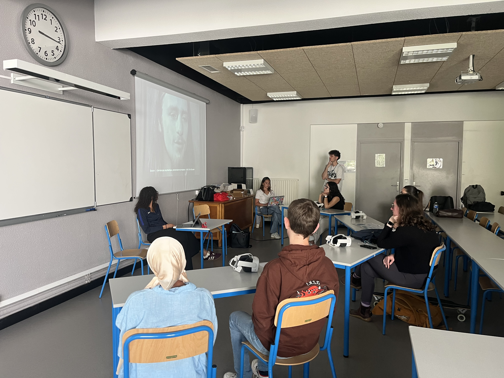

Ici, vous trouverez les résultats de notre projet, notamment les données collectées, les analyses réalisées et les conclusions que nous en avons tirées.
Avant d'élaborer notre vidéo, nous voulions savoir les préjugés les plus répendus sur la schizophrénie.
C'est pour cela que nous avons créé un questionnaire.
En plus de questionner sur les préjugés, nous avons choisi le mode de transmission que les étudiants
préféraient.
Les résultats nous ont permis de confrimer que les casque Vr était un excellent choix.
Durant notre projet, nous avons dû réaliser plusieurs pré-tests utilisateurs (avant la semaine SASU) afin d'évaluer l'efficacité de notre solution et de recueillir des retours précieux. Ces tests nous ont permis d'identifier les points forts de notre projet ainsi que les aspects à améliorer, afin de garantir une expérience utilisateur optimale.
Pour ces tests, nous avons recruté 3 personnes. Les tests se sont déroulés en 3 étapes : une première
étape
de présentation du projet, une seconde étape d'utilisation de la solution, et une troisième étape de
recueil de feedbacks.
Pour la première étape, nous avons présenté notre projet à nos testeurs en leur expliquant les
objectifs,
les fonctionnalités et les avantages de notre solution sans divulguer ce qu'était la schizophrénie.
Pour la seconde partie, nous avons installé la personne assise, prête à regarder notre vidéo.
Enfin, pour la troisième partie, nous avons recueilli les feedbacks de nos testeurs à l'aide d'un
entretien
en leur posant des questions sur leur expérience, leurs impressions et leurs suggestions d'amélioration.
Durant la semaine SASU organisée par notre école, nous avons pu bénificier d'une après-midi afin de
sensibiliser 35 étudiants de 2ème année de l'ENSC.
Notre présentation s'est organisée sur des crénaux de 30 minutes. Nous installions les
casques, ensuite, les étudiants visionnaient notre vidéo. Suite à ce visionnage, nous discutions avec
eux
puis,
afin d'approfondir la sensibilisation, nous leur donnions des exemples plus concrets d'autres symptômes
en
leur montrant des
vidéos de personnes schizophrènes. Enfin, nous recueillions leurs feedbacks à l'aide d'un petit
entretien.




Les retours sur notre sensibilisation ont été positifs dans l'ensemble.
En effet, 35/36 élèves (dont 5 qui connaissaient très bien ce handicap) nous on dit que la vidéo
était
représentative de la réalité. Seulement une personne nous a dit que ce n'était pas représentatif, qu'on
ne
voyait pas le côté du soutien de la famille, des journées dans les hopitaux.
Durant l'échange de la sensibilisation, nous avons pu comprendre qu'au début, la majorité pensaient
que
les personnes atteintes de schizophrénie étaient des "fous", et au fur et à mesure, ils ont compris la
détresse dans laquelle ces
personnes pouvaient se trouver.
Enfin, nous avons pu remarquer que le fait de montrer des vidéos de personnes schizophrène a permis
d'appuyer
notre discours et donc d'apporter une meilleure sensibilisation.
Pour conclure, ce projet a été un projet passionnant pour nous car il nous a permis de réellement comprendre l'enjeu de la sensibilisation des hanidcaps invisbibles. De plus, nous sommes très satisfaits car les étudiants ayant testé notre vidéo, nous ont donné des retours très positifs.
Nous souhaiterions remercier notre tutrice pour son aide précieuse tout au long du projet, mais également les experts de l'hopital Charles Perrens qui on réussi à nous soutenir dans notre projet, le rendant plus concret et nous permettant ainsi de nous investir pleinement.